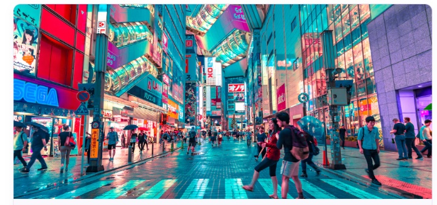
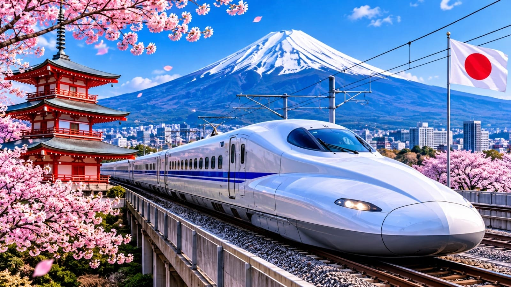
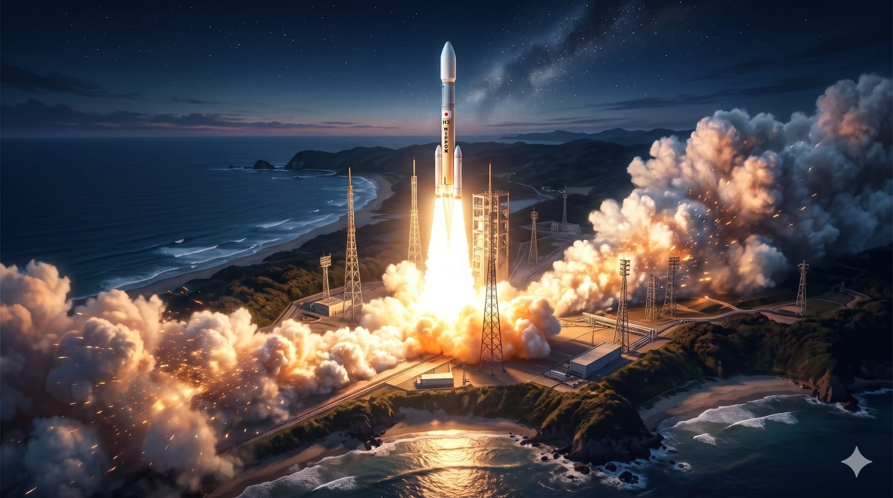

01 • Automation
01 • Automation
Robotics & Automation
Japan produces over 45% of the world's industrial robots. Companies like Fanuc, Kawasaki, and SoftBank Robotics lead in factory automation and humanoid assistants.
Innovation, Robotics & Future Engineering
Japan stands at the forefront of global engineering, precision robotics, and high-speed transit. By combining centuries of craftsmanship (Monozukuri) with modern digital breakthroughs, Japan continues to shape the future of daily life.

Hover over the banner to pause and view key innovations.

World leader in industrial robotic arms and humanoid healthcare companions.
Discover the breakthroughs transforming industries across Japan.
01 • Automation
Japan produces over 45% of the world's industrial robots. Companies like Fanuc, Kawasaki, and SoftBank Robotics lead in factory automation and humanoid assistants.

02 • High-Speed TransitThe Shinkansen network features aerodynamic kingfisher-inspired designs, earthquake early-warning brakes, and the 603 km/h L0 Series SCMaglev.
 03 • Cognitive Computing
03 • Cognitive Computing
Japanese AI powers predictive factory maintenance, autonomous farming equipment, medical imaging diagnostics, and real-time voice translation.
 04 • IoT & Sustainability
04 • IoT & Sustainability
From Toyota's Woven City prototype to smart home energy grids, IoT appliances, and seismic-isolated skyscrapers, daily life is built for comfort and safety.

05 • Aerospace & JAXAJAXA leads deep-space engineering with the Hayabusa asteroid sample-return missions, the SLIM pinpoint Moon lander, and next-gen H3 rockets.
Titans like Nintendo, Sony PlayStation, and Capcom drive global innovation in console hardware, haptic feedback, and immersive VR gaming.